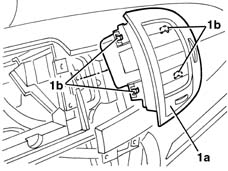

5010C31 centre air outlet on facia one lh or rh r r
- Path
- Procedures > 50 AUXILIARY UNITS > 5010 CLIMATE CONTROL - MISCELLANEOUS > 5010C air outlet and diffusers > 5010C31 centre air outlet on facia one lh or rh r r
- Kind
- repair procedure (removal / refitting; the operation number is the code)
- Applies to
- all engines; all production periods
- Interactive page
- https://sloeber94.github.io/elrnDB-lYpsln/en/#/2429285
Applies to: all engines; all production periods
 Removing
Removing
 Refitting
Refitting5570T10 car radio support - r+r - includes contact repair and supply circuit check
1. Extract the vent (1a) releasing the retainers (1b).

Applies to: all engines; all production periods
Refitting
RemovingCheck that the vent is not damaged.
Position the vent attaching the retainers.
5570T10 car radio support - r+r - includes contact repair and supply circuit check
Topics linked from this page (2)
- 5570T10 car radio support - r+r - includes contact repair and supply circuit check
- 5570T80 car radio unit - r+r